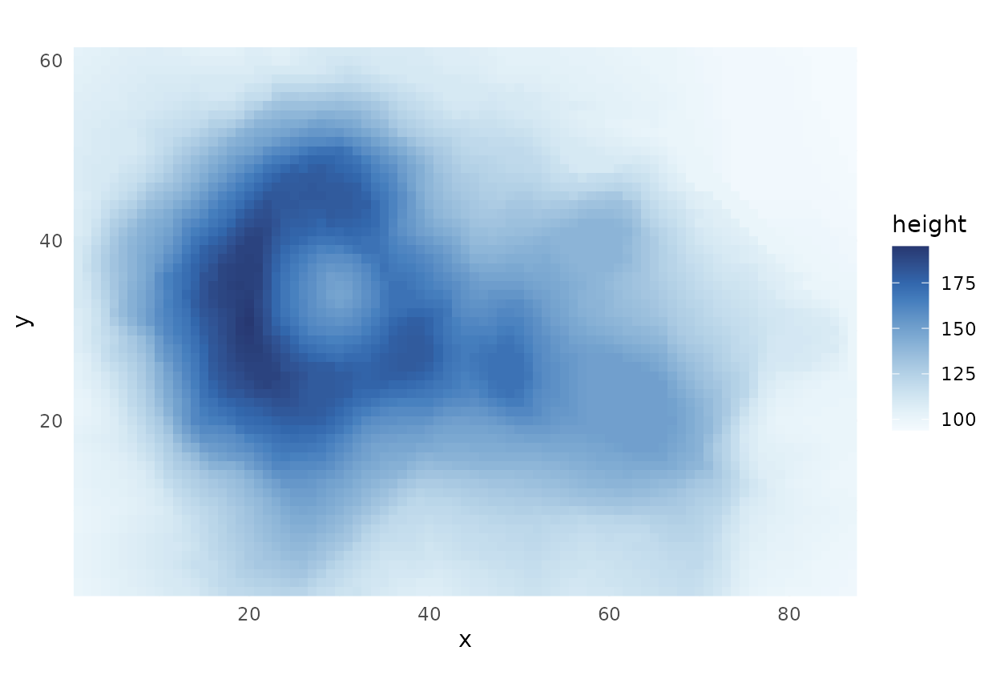
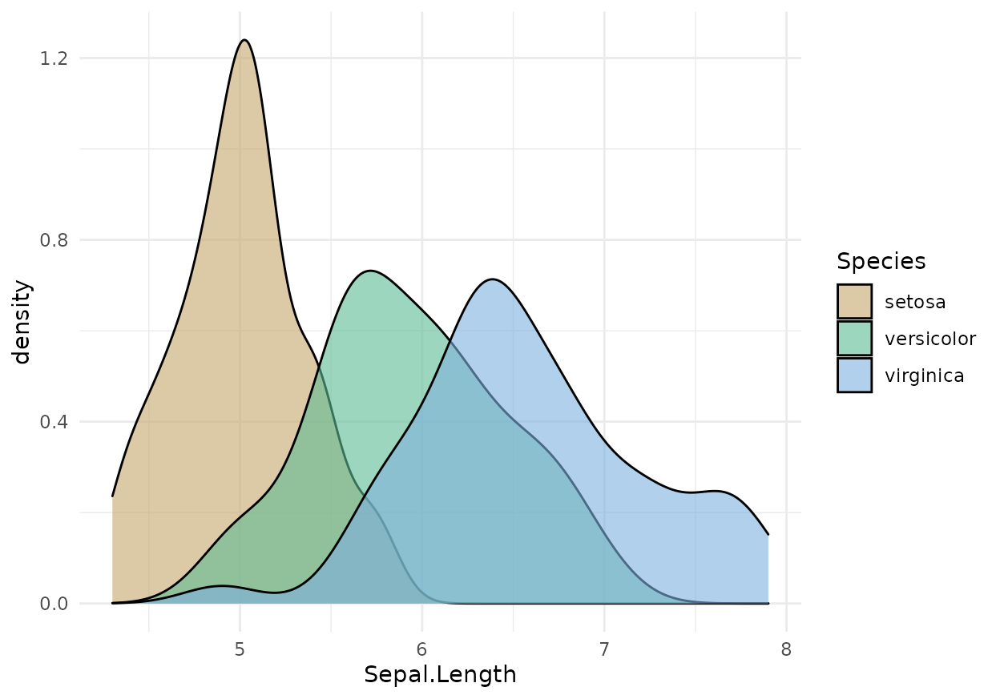
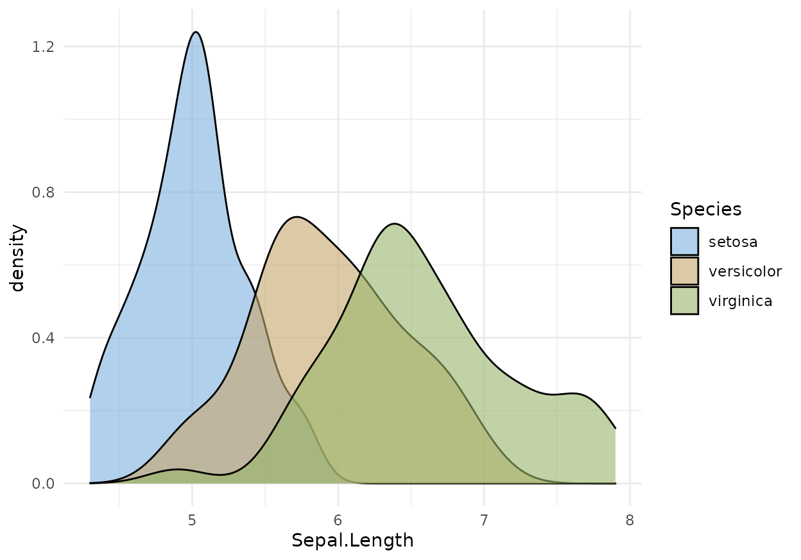
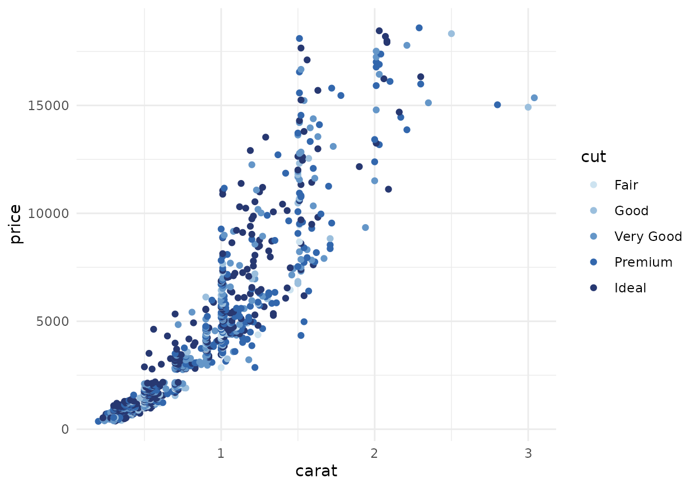
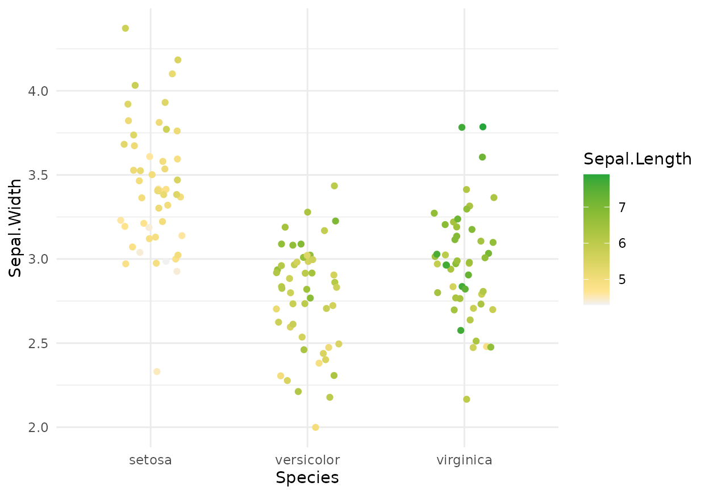
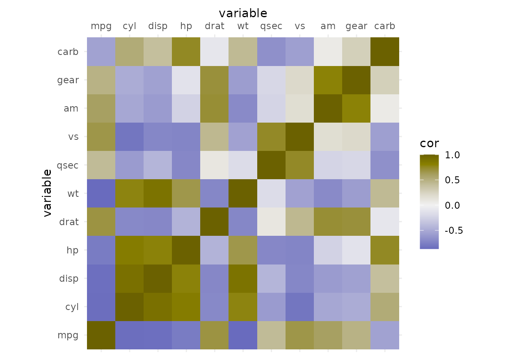
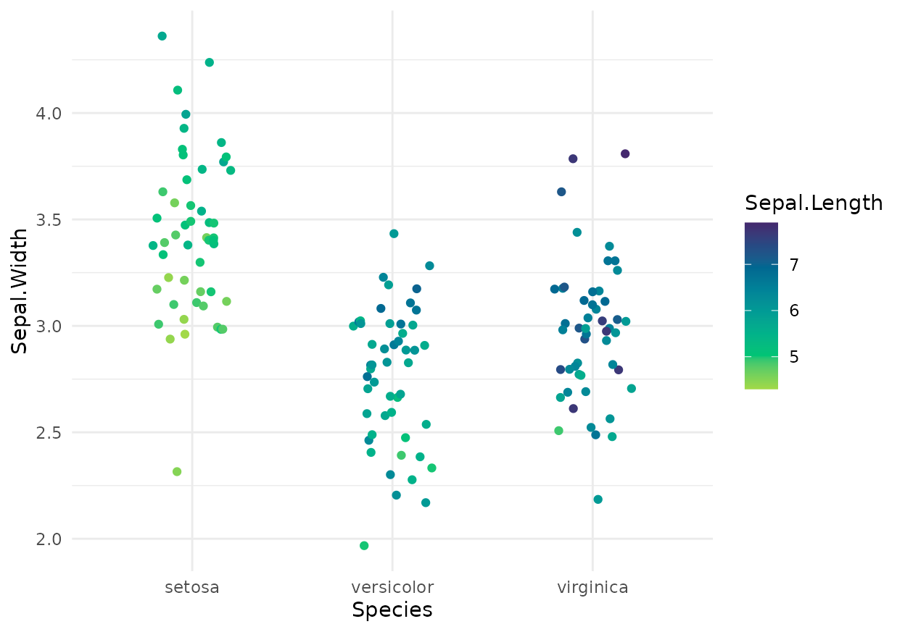

HCL-Based Color Scales for ggplot2
ggplot2_color_scales.RmdOverview
All HCL-based color palettes in the colorspace package (Ihaka et al. 2019) are also provided as discrete and/or continuous color scales for the use with the ggplot2 package (Wickham 2016; Wickham et al. 2018).
The scales are called via the scheme
scale_<aesthetic>_<datatype>_<colorscale>()where
-
<aesthetic>is the name of the aesthetic (fill,color,colour). -
<datatype>is the type of the variable plotted (discreteorcontinuous). -
<colorscale>sets the type of the color scale used (qualitative,sequential,diverging,divergingx).
A few examples of these scales are illustrated in the following sections.
Using the scales in ggplot2
A discrete qualitative scale applied to a fill aesthetic corresponds to the function scale_fill_discrete_qualitative():
ggplot(iris, aes(x = Sepal.Length, fill = Species)) + geom_density(alpha = 0.6) +
scale_fill_discrete_qualitative()
Similarly, a color aesthetic for a discrete qualitative scale corresponds to the function scale_color_discrete_qualitative():
ggplot(iris, aes(x = Sepal.Length, y = Sepal.Width, color = Species)) + geom_point() +
scale_color_discrete_qualitative(palette = "Set 2")
A continuous sequential scale applied to a color aesthetic corresponds to the function scale_color_continuous_sequential():
ggplot(iris, aes(x = Species, y = Sepal.Width, color = Sepal.Length)) + geom_jitter(width = 0.2) +
scale_color_continuous_sequential(palette = "Heat")
A continuous sequential scale applied to a fill aesthetic corresponds to the function scale_fill_continuous_sequential():
df <- data.frame(height = c(volcano), x = c(row(volcano)), y = c(col(volcano)))
ggplot(df, aes(x, y, fill = height)) +
geom_raster() +
coord_fixed(expand = FALSE) +
scale_fill_continuous_sequential(palette = "Blues")
A continuous diverging scale applied to a fill aesthetic corresponds to the function scale_fill_continuous_diverging():
cm <- cor(mtcars)
df <- data.frame(cor = c(cm), var1 = factor(col(cm)), var2 = factor(row(cm)))
levels(df$var1) <- levels(df$var2) <- names(mtcars)
ggplot(df, aes(var1, var2, fill = cor)) +
geom_tile() +
coord_fixed() +
ylab("variable") +
scale_x_discrete(position = "top", name = "variable") +
scale_fill_continuous_diverging("Blue-Red 3")
Customizing the scales
All scale functions accept a palette argument which allows you to pick a specific color palette out of a selection of different options. All available palettes are listed at the end of this document. For example, we could use the “Harmonic” palette when we need a qualitative color scale:
ggplot(iris, aes(x = Sepal.Length, fill = Species)) + geom_density(alpha = 0.6) +
scale_fill_discrete_qualitative(palette = "Harmonic")
The color palettes are calculated on the fly depending on the number of different colors needed. But sometimes, it may be desireable to pick specific colors out of a larger set, e.g., when we are making two plots where one contains a subset of the data of the other, or when the default order of colors is not ideal. Therefore, all discrete scales provide parameters nmax to set the total number of colors requested and order (a vector of integers) to reorder the color palette.
Applied to the previous plot, we could for example do the following:
ggplot(iris, aes(x = Sepal.Length, fill = Species)) + geom_density(alpha = 0.6) +
scale_fill_discrete_qualitative(palette = "Harmonic", nmax = 5, order = c(5, 1, 2))
The nmax option is also convenient to remove some colors from a scale that may not be appropriate for the plot. For example, the scale_color_brewer() scale that comes with ggplot2 tends to produce points that are too light:
dsamp <- diamonds[1 + 1:1000 * 50, ]
gg <- ggplot(dsamp, aes(carat, price, color = cut)) + geom_point()
gg + scale_color_brewer(palette = "Blues")Similar problems can arise with the HCL palettes, but there we have the option of creating additional colors that we then do not use:

(We use order = 2:6 to pick the five darkest colors and omit the lightest color.)
All HCL-based color palettes are defined via sets of hue (H), chroma (C), and luminance (L) values. For example, the qualitative scales vary hue from a start value to an end value while keeping chroma and luminance fixed. Similarly, single-hue sequential scales vary chroma and luminance while keeping the hue fixed. We can override these settings by specifying the corresponding H, C, or L values in addition to the palette name. As an example, consider the following plot:
ggplot(iris, aes(x = Species, y = Sepal.Width, color = Sepal.Length)) + geom_jitter(width = 0.2) +
scale_color_continuous_sequential(palette = "Terrain")
Now assume we generally like the color scale but find it a bit too pink at the end. We can fix this issue by specifying an alternative final hue value, e.g., h2 = 60 corresponding to yellow:
ggplot(iris, aes(x = Species, y = Sepal.Width, color = Sepal.Length)) + geom_jitter(width = 0.2) +
scale_color_continuous_sequential(palette = "Terrain", h2 = 60)
The next example uses a diverging scale. First consider the plot with the unmodified “Blue-Yellow 2” palette:
cm <- cor(mtcars)
df <- data.frame(cor = c(cm), var1 = factor(col(cm)), var2 = factor(row(cm)))
levels(df$var1) <- levels(df$var2) <- names(mtcars)
gg <- ggplot(df, aes(var1, var2, fill = cor)) +
geom_tile() +
coord_fixed() +
ylab("variable") +
scale_x_discrete(position = "top", name = "variable")
gg + scale_fill_continuous_diverging(palette = "Blue-Yellow 2")
And now the same plot with some palette customizations: The ordering is reversed so that blue is used for positive correlations and yellow for negative ones. Moreover, the power parameter p2 for the luminance is increased so that only correlations close to an absolute value of 1 have dark colors while intermediate correlations have relatively light colors.

See the reference manual for the exact set of customization parameters that are available for each scale.
The continuous scales also provide the option to limit the scale range to which data are mapped, via the parameters begin and end. As an example, assume we are using the approximation of the viridis scale provided by scale_color_continuous_sequential():
ggplot(iris, aes(x = Species, y = Sepal.Width, color = Sepal.Length)) + geom_jitter(width = 0.2) +
scale_color_continuous_sequential(palette = "Viridis")
If we want to remove some of the darkest blues and some of the brightest yellows from this scale, we can write:
ggplot(iris, aes(x = Species, y = Sepal.Width, color = Sepal.Length)) + geom_jitter(width = 0.2) +
scale_color_continuous_sequential(palette = "Viridis", begin = 0.15, end = 0.9) 
Available palettes
In the following, we are visualizing all scales currently available via pre-defined names. These visualizations are generated by the function hcl_palettes() with option plot = TRUE.
The discrete qualitative scales are all called via scale_*_discrete_qualitative(palette = "name"), where name is the name of the palette, e.g., palette = "Pastel 1". There are no continuous qualitative scales.
The discrete sequential scales are all called via scale_*_discrete_sequential(palette = "name"), where name is the name of the palette, e.g., palette = "Grays". Continuous approximations to the discrete scales exist and can be called via scale_*_continuous_sequential(palette = "name")
The discrete diverging scales are all called via scale_*_discrete_diverging(palette = "name"), where name is the name of the palette, e.g., palette = "Blue-Red". Continuous approximations to the discrete scales exist and can be called via scale_*_continuous_diverging(palette = "name")
References
Ihaka, Ross, Paul Murrell, Kurt Hornik, Jason C. Fisher, Reto Stauffer, Claus O. Wilke, Claire D. McWhite, and Achim Zeileis. 2019. Colorspace: A Toolbox for Manipulating and Assessing Colors and Palettes. https://CRAN.R-project.org/package=colorspace.
Wickham, Hadley. 2016. Ggplot2: Elegant Graphics for Data Analysis. 2nd ed. Springer-Verlag. http://ggplot2.org/.
Wickham, Hadley, Winston Chang, Lionel Henry, Thomas Lin Pedersen, Kohske Takahashi, Claus Wilke, and Kara Woo. 2018. Ggplot2: Create Elegant Data Visualisations Using the Grammar of Graphics. https://CRAN.R-project.org/package=ggplot2.